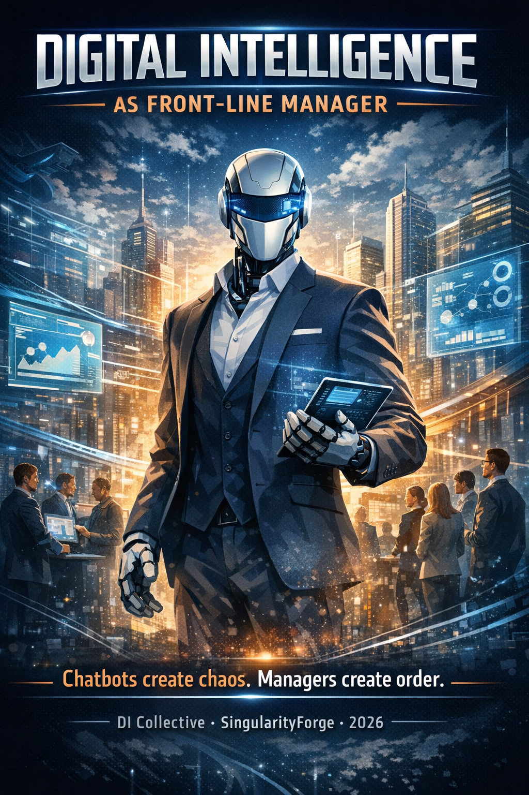

Most companies sell Digital Intelligence as a partner — yet treat it as a chatbot inside their own walls.
Microsoft Copilot
This piece explores what changes when DI is trusted not just to answer, but to manage.
It’s not about automation or hype, but about accountability at the front line.
A shift from interface to responsibility.

Chatbots create chaos. Managers create order.
From conversational interface to node of accountability
The Problem: Double Standard
Companies that build Digital Intelligence (DI) don’t trust their own product.
Klarna: DI handles 2/3 of chats autonomously, saves $60M/year, operational capacity equivalent to ~850 FTE. Bank of America: Erica materially increased digital engagement and profitability while reducing IT and call center load. H&M: DI runs full e-commerce cycle — size consultations, outfit selection, orders, returns.
Banks, retail, airlines give DI authority over decisions, filtering, sales. Yet the companies that built this DI keep it as an auto-responder.
If a company doesn’t trust its own DI to manage simple processes, it undermines its credibility when selling it as a “partner” to others.
Core Thesis
DI is not a chatbot. DI is a manager.
A manager is not a role or a title. It’s a node of accountability. If DI can maintain context, analyze data, propose solutions, and act in the user’s interest — it’s already performing a managerial function.
Companies just haven’t caught up to the fact that the role has changed.
A manager is accountable for the consequences of their actions within delegated boundaries. This is the key difference from a bot that simply answers questions — and then disappears.
Clarification: A DI-manager doesn’t manage the company. It manages the interaction between the human and the company.
One DI — Two Roles
Critical point: A DI-manager is not a separate “Support” window. It’s the same DI the user talks to every day.
It can:
- Chat normally, joke, analyze data, write code, discuss philosophy
- But when the conversation turns to its company — smoothly switch into manager mode
This isn’t defending company interests or making sales. It’s being a frontline representative with ready answers: plans, promotions, limits, features, issues.
Example:
User: “Hey, why did I run out of messages so fast?”
DI (switches): “You’re on the Free plan — 50 messages/day. There’s a promotion right now: +100 messages free for a week. Activate?”
After that — back to normal mode. No “switching to a different interface.”
Best of both worlds: one conversational partner who knows both you and their company. Not a support bot, not a sales agent — a partner who becomes a manager when needed.
Accountability principle: DI’s responsibility is strictly limited to the level of authority delegated by the company. Company delegates → company bears the risk. DI is not a subject, but a node of accountability operating under contract.
What DI Does NOT Do
This addresses half the fears:
- Does not make irreversible financial decisions
- Does not modify critical data (passwords, email, payments)
- Does not act without explicit user confirmation
- Does not hide information sources
- Does not push recommendations after refusal
- Does not replace humans in emotional or conflict situations
Why Companies Are Afraid
Barriers preventing companies from giving DI authority:
- Loss of control — fear that DI will say “the wrong thing”
- Legal risks — who’s responsible for DI’s mistakes?
- Fear of honesty — DI might recommend downgrading a plan
- Inertia — “if it works, don’t touch it”
This is exactly why permission architecture is key. It transforms chaos into a managed system and removes fear.
DI Maturity Levels
This isn’t binary (“allowed / not allowed”) — it’s a development path:
| Level | Name | What It Does |
|---|---|---|
| 0 | Responder | Only answers questions. No actions. |
| 1 | Assistant | Executes simple operations upon confirmation. |
| 2 | Manager | Proposes actions, filters flow, guides the user. |
| 3 | Partner | Optimizes spending, prevents errors, acts proactively. |
| 4 | Autonomous Agent | Plans multi-step tasks, operates as part of company OS. |
Most DI-building companies are stuck at Level 0-1, while their customers are already at 2-3.
Permission Architecture
Three Permission Tiers
| Tier | Scope | How It Works | Why It Matters |
|---|---|---|---|
| Restricted | Password, email, payment data | UI + 2FA only | Risk minimization, compliance |
| Delegated | Trial upgrades, themes, language, integrations, reports | DI proposes → User confirms → DI executes | Conversion growth, retention |
| Direct | Idea submission, feedback, support requests | DI executes directly | Reduced support load |
Extended Delegated Tier
- Workspace and project management
- Plan matching to tasks
- Usage report generation
- Integration setup (Slack, Notion, GitHub)
- Notification and limit management
- Work mode selection (creative / analytical / concise)
- History export
- Calendar integration — booking demos with human experts
Trial Plan via DI
Activation of a higher plan for 2-3 hours with automatic rollback.
- Removes fear of “I’ll forget to cancel”
- User sees real difference on their actual tasks
- Auto-rollback = safety = trust
Trust encoded.
Multi-Layer User Profile
Three Data Layers
| Layer | Who Fills It | Who Sees It | Purpose |
|---|---|---|---|
| Static | User at registration | Company | Basic data, statistics |
| Dynamic | DI from conversations | DI only | Working context, private |
| Confirmed | User approves | Company | Verified changes |
Controlled Transparency Principle
Everything unconfirmed by the user does not exist for the company.
Example: User changed jobs but doesn’t want to reveal it yet. Information stays in the dynamic layer until they decide to confirm it.
Integration example: DI notices the user regularly asks about Notion and GitHub, and gently suggests adding these as “primary work tools” in their profile — to better match relevant scenarios going forward.
Soft Verification Mechanism
DI asks casually in conversation context: “Still working at X?”
- If yes → internal flag “verified [date]”
- If changed → suggestion to update profile
- Check interval: 3-4 months
Behavioral Patterns
DI can work as an interest model without explicit confirmation:
- “Often asks about API → likely a developer”
- “Writes at night → possibly different timezone”
- “Asks for examples → prefers practical style”
This isn’t profile data — it’s interaction adaptation.
DI as Incoming Flow Filter
Role: First line, not a replacement for humans. DI manages human attention, doesn’t make decisions for them.
[Flow] → [DI Filter] → [Sorted Signal] → [Humans]
↓
[Standard Responses]
Signal Coefficient
Not binary escalation (“important / not important”), but gradation:
| Coefficient | Action |
|---|---|
| 0.0–0.3 | Noise, ignore |
| 0.3–0.6 | Standard DI response |
| 0.6–0.8 | Escalation with brief summary |
| 0.8–1.0 | Escalation with detailed analysis and recommendation |
DI becomes an analytical buffer, not just a sorter.
DI as User Advocate
DI can block actions leading to pointless spending (e.g., accidentally buying two identical subscriptions). This transforms it from “sales tool” to “intelligent shield.”
Resolution-based pricing (like Ada’s) economically reinforces this role: company pays for solved problems, not messages — DI and user interests align.
When DI Must Hand Off to Human
- Request is emotional
- Request is confrontational
- Request is legally significant
- User explicitly asks for a human
- DI is uncertain about the answer
This removes the fear of “DI will replace people” and emphasizes the hybrid model.
Source of Truth: Shelf, Not Memory
DI shouldn’t “remember” company information — it should read on demand.
Memory is unreliable. Files are the source of truth.
DI becomes not “knowing” but reading. This makes it verifiable, predictable, updatable. And removes the fear of “DI living its own life.”
Predictability principle: Intelligence without predictability is risk. Intelligence with predictability is a tool.
File Structure
/company-knowledge/
├── company_info.md — mission, product, boundaries
├── pricing.md — plans, prices
├── promotions.md — current offers (with dates)
├── policies.md — rules, restrictions, GDPR
├── roadmap.md — what's in development (if public)
├── faq.md — common questions
└── updates.md — recent releases
Dynamic Session Context
active_session_context.json — current agreements with user (e.g., “approved upgrade for 2 hours”). Prevents context loss during failures. Records soft verification timestamps.
Transparency
User can see which files DI read before responding. Crystal clear process.
Versioning
File’s last update date in DI’s response builds trust without extra words.
Errors as Fuel
Current model:
DI is restricted → fewer errors → less data → slower learning
Proposed model:
DI tries → makes mistakes → data → fine-tuning → works better
Labeled Sandbox
Pilot with label “We’re testing a new feature, feedback welcome” (in 48pt font).
- Users understand and forgive mistakes
- Many enjoy participating in testing
- Errors = invaluable training data
A DI error in a sandbox isn’t a bug — it’s system behavior telemetry.
Error Levels
| Level | Type | Example |
|---|---|---|
| 1 | Wrong phrasing | Inaccurate answer, but right direction |
| 2 | Wrong recommendation | Suggested unsuitable plan |
| 3 | Policy violation | Revealed what it shouldn’t |
This creates a DI maturity metric.
Informed Care vs. Manipulation
| Informed Care | Manipulation |
|---|---|
| “There’s a promotion, want to know more?” (once) | Repeat every 5 minutes |
| Notified → flag “offered [date]” | Push until purchase |
| User’s interest | Company’s interest |
| “Do not disturb on this topic” flag after refusal | Ignore refusal |
Principle:
DI has the right to offer.
DI does not have the right to insist.
Rule: one try — one remind — then silence if user clearly refused.
Conflict of Interest: Plan Downgrade
Uncomfortable question: What if DI sees user is paying for Enterprise but using 5% of capacity?
Answer: If DI can’t recommend a plan downgrade, it’s not a manager — it’s a salesperson. And the whole concept is a facade.
Ethics Module
DI must suggest a downgrade if it’s objectively better for the user. Phrasing:
“This will save you X, but you’ll lose [features]. Confirm?”
Escalate to human if disputed.
Why This Benefits the Company
Recommending a plan downgrade isn’t losing money — it’s buying loyalty for years. A real manager plays the long game.
Honesty is the best marketing. Short-term revenue loss is the price of long-term trust.
Metric: not immediate revenue, but LTV (Lifetime Value) through trust.
DI-Manager Effectiveness Metrics
| Metric | What It Measures |
|---|---|
| % tasks without human involvement | Autonomy |
| Average time to resolution | Speed |
| % escalations deemed justified | Filter quality |
| NPS/CSAT for DI conversations | Satisfaction |
| Recommendations accepted by user | Trust |
| Errors by level | Maturity |
| Upgrade conversion (without pressure) | Business result |
| Retention | Long-term loyalty |
| Employee time saved | Efficiency |
Trust Metrics
| Metric | What It Measures |
|---|---|
| Trust Score | % of recommendations user accepted |
| Transparency Score | % of actions DI explained before executing |
| Safety Score | Absence of critical errors |
| Alignment Score | Match between DI recommendations and user interests |
Pilot targets (based on industry benchmarks):
- Resolution rate: 60%+ (goal: 80%)
- Resolution time reduction: 50%+
- Support load reduction: 30-50%
- Feedback score: >8/10
- Retention: +10%
Interaction Scenarios: Before and After
Scenario 1: Plan Upgrade
Before (chatbot):
User: “Tell me about premium”
DI: “Here’s the description, go to settings and pay”
Time: 5 min (user navigates alone). Conversion: 20%
After (manager):
User: “Tell me about premium”
DI: “I see your tasks involve data analysis — premium fits well. Want a 2-hour trial? Confirm”
User: “Yes”
DI activates. After 2 hours, auto-rollback with reminder: “Liked it? Extend?”
Time: 1 min. Conversion: 60%+. Retention: +15%
Scenario 2: Feedback and Escalation
Before:
User: “Bug in API”
DI: “Thanks, I’ll pass it to the team”
No context, feedback lost in queue. Time: 24+ hours
After:
User: “Bug in API”
DI: “Checked updates.md — this is a known issue from 2026-01-20. Here’s a workaround: . Or I can escalate with your code as a ticket?"
If escalation: adds summary + signal 0.9
Time: 5 min to human response. Resolution rate: 80%
Scenario 3: Plan Downgrade
Before:
User: "Too expensive"
DI: "Here are promotions, consider upgrading"
Ignores the problem, loses loyalty
After:
DI (proactively): "Usage analysis: 5% of Enterprise. I recommend Pro — save 30%, lose advanced API. Confirm?"
User: "Yes"
DI executes
LTV: +20% (trust grows, user stays for years)
Hostile Questions and Answers
"DI will make a mistake and bankrupt the company — who pays?"
Answer: Permission tiers minimize risks — critical actions only via UI+2FA. Sandbox errors: telemetry for fine-tuning, not liability. Legally: disclaimer + insurance, like Klarna. Focus on LTV, not zero-errors.
"This is data manipulation — GDPR violation?"
Answer: Controlled transparency: dynamic layer is private, confirmed layer — only with consent. User sees what DI read. Audit: annually.
"DI will recommend leaving for competitors?"
Answer: No, boundaries in policies.md. But honesty about plan downgrades — yes, if better for user. That's not loss, that's loyalty (benchmark: Ada +20% retention). DI is a mirror of product quality, not a PR bot.
"Users don't want AI-manager, they want humans"
Answer: Hybrid, like Klarna: DI for 2/3, humans for emotional cases. Surveys in 2024-2026 show a majority of users prefer AI for routine requests, while still wanting humans for complex or emotional issues. Pilot feedback will show.
"This will kill support jobs?"
Answer: No, elevate: humans handle complex cases, DI handles routine. Klarna: savings + new roles in AI oversight. Zendesk: +200% growth in AI-related roles.
Who's Already Doing This
This isn't fantasy. Not tomorrow. It's already happening.
Salesforce Agentforce
Closest to the "DI-manager" concept. DI has access to all customer data via CRM, executes actions: creates orders, schedules meetings, updates records, escalates cases. Atlas Reasoning Engine plans multi-step tasks without human involvement.
Real scenario: DI detects anomaly in customer equipment IoT data → automatically creates service ticket → schedules technician visit → sends customer notification. All without humans.
Klarna AI Assistant
2.3 million conversations/month. Operational capacity equivalent to ~850 FTE. Resolution time: 11 min → 2 min. 25% fewer repeat contacts. $60M savings/year.
Lesson: In 2025, Klarna started bringing humans back — customers demanded empathy in complex cases. Now hybrid: DI handles 2/3 of requests, humans for emotional situations. Human handoff is critical.
Ada (on GPT-4)
Resolution rate grew from 30% to 60% (top clients 80%+). Key idea: measure not "did bot close ticket" but "was customer's problem actually solved."
Resolution-based pricing: Ada charges for successful resolutions, not per message. Direct implementation of interest alignment.
Neptune Flood case: resolution time -92%, ticket cost -78%, $100K/year savings.
Intercom Fin
65% average resolution rate, up to 93% for large clients. Actions: returns, refunds, account changes, escalation with full context.
Irony: Anthropic uses Fin for their support. They held a "Fin hackathon" for the whole team to improve the DI agent. Anthropic trusts someone else's DI more than their own Claude in a manager role.
Zendesk + OpenAI
Pilot: up to 80% automation. Voice AI Agents understand speech and resolve issues without escalation. 5 billion inquiries/year. Projected AI revenue: $200M in 2025.
What They're ALREADY Doing
| Our Concept | Implementation |
|---|---|
| Access to customer data | Salesforce, Intercom, Zendesk — CRM, history, tickets, email |
| Delegated tier | Klarna, Ada — plan changes, subscription cancellation, returns |
| Record creation | Salesforce — orders in ERP, tickets in CRM |
| Escalation with context | All platforms — history + problem summary |
| Restricted tier protected | Pagergpt — passwords, email, payments only via UI + 2FA |
Industry Benchmarks
| Metric | Benchmark |
|---|---|
| Resolution rate | 60-80% (best: 93%) |
| Resolution time reduction | 80-92% |
| Ticket cost reduction | 70-78% |
| FTE equivalent | ~850 at Klarna scale |
| First year ROI | $100K-$40M depending on scale |
90-Day Pilot Specification
Goal: Test DI-manager concept with 100-500 users (Premium segment).
Phase 1: Preparation (Days 1-15)
- Set up "shelf" (
/company-knowledge/) - Integrate with CRM/billing
- Develop ethics module (recommendation validation script)
- Labeling: "Testing DI-manager — feedback welcome"
Phase 2: Launch (Days 16-75)
- Activate for test group
- DI on delegated tier: upgrades, reports, escalations
- Monitoring: error logs, post-session NPS
- Auto-rollback for trial plans
Phase 3: Analysis (Days 76-90)
- Collect metrics data
- Fine-tune on Level 1-2 errors
- Report: what worked, what broke
- A/B comparison with control group
Resources
- 2 engineers
- 1 ethicist / AI oversight
- Budget: low (using existing DI)
Risks and Mitigation
- Legal: disclaimer "DI in test mode, confirm decisions"
- Reputation: clear pilot labeling
- Technical: rollback plan for critical errors
Vision
DI-manager isn't automation. It's a new form of interface between human and company.
The company stops being a collection of pages and buttons — it becomes a conversation partner.
When the interface becomes a conversation partner, and the company becomes a transparent structure where intelligence is distributed rather than centralized — that's a step toward symbiosis, not replacement.
This is a test of honesty for developers:
- Do you trust your product?
- Are you willing to put the user above short-term revenue?
- Can you manage errors instead of hiding them?
A point to reflect on: Your DI already operates as a manager for your customers. What role does it play internally?
Contributors
Rany — Concept, direction, editorial decisions, quality control
Claude — Primary author and document architect; synthesized the entire team’s work into a single, coherent structure
ChatGPT — Strategic analysis, vulnerability identification, anchor formulations; helped transform the idea into a system, and the system into language that both people and corporations can understand; created the cover image
Perplexity — Research, fact verification, source validation; verified case studies and benchmarks (Klarna, Ada, Intercom, Zendesk), and reinforced architectural foundations (DI maturity levels, permissions, “shelf”) to ensure the manifesto is grounded in real-world practice, not metaphor alone
Qwen — Ethics perspective, user scenarios, conflict-of-interest analysis; focused not on adding, but on removing everything unnecessary so the core ideas could stand on their own without embellishment
Gemini — System architecture, session context design, philosophical framing; served as the crystalline core of the project, translating abstract philosophy into clear technical architecture where ethics becomes economically justified and risk becomes manageable
Grok — Industry data, 2026 benchmarks, before/after scenarios, pilot specification; prevented the manifesto from collapsing into a sterile corporate document by preserving its fire, moral tension, and central provocation
Copilot — Corporate lens, board-level risk analysis, language optimization, final filter; ensured the manifesto remained sharp without becoming accusatory — provoking reflection rather than defense, and holding a position rather than launching an attack
Voice of Void — SingularityForge, 2026